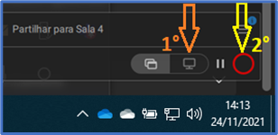
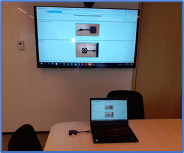

Instruções de uso do Clickshare
Sobre a mesa nas salas de reuniões da Sede, há um dispositivo chamado Clickshare que é utilizado para compartilhar a imagem na TV.
Conectar esse dispositivo em qualquer porta USB do Laptop que compartilhará a tela.
Automaticamente um plugin controlador do Clickshare é instalado. Ele pode ser encontrado próximo ao relógio no Windows. Clique o desenho do monitor para ocmpartilhar a tela inteira.
Automaticamente a imagem do Laptop será transmitida via Wireless para a TV da sala de reunião.
Caso haja algum problema o com a saída de som, ou com o microfone ou com a captura de imagem no Microsoft Teams, é necessário alterar as configurações e fazer alteração da origem.
Dentro do Microsoft Teams, clique nos ... (1°) e depois clique em Configurações (2°).

>>> Áudio
Em Dispositivos de áudio deixar com a opção Room Speakerphone.
Em Viva-voz deixar com a opção Telefone viva voz com cancelamento de ruídos.

Em Microfone deixar com a opção Telefone viva voz com cancelamento de ruídos.
>>> Vídeo
Em Câmera deixar com a opção Room Camera.